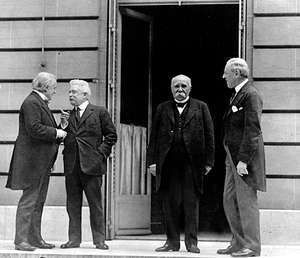
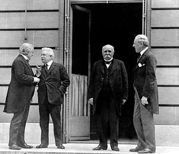

Primul Război Mondial a început în 28 iulie 1914, după asasinarea arhiducelui Franz Ferdinand, şi a durat până în 11 noiembrie 1918. În timpul conflictului, Germania, Austro-Ungaria, Bulgaria şi Imperiul Otoman (Puterile Centrale) au luptat împotriva Marii Britanii, Franţei, Rusiei, Italiei, României, Japoniei şi Statelor Unite ale Americii (Antanta). Din cauza avansului tehnicii militare, Primul Război Mondial a dus la un nivel fără precedent al carnagiilor şi al distrugerilor. Până la momentul încheierii războiului cu victoria Aliaţilor, au murit peste 16 milioane de oameni, soldaţi şi civili.
Uciderea arhiducelui Franz Ferdinand Tensiunile creşteau în Europa, mai ales în zona Balcanică şi sud-estul Europei, cu mult timp înainte de izbucnirea Primului Război Mondial. Marile puteri ale Europei au creat diferite alianţe. Imperiul Otoman, Rusia (Imperiul Ţarist) şi alte grupuri politico-statale existau de ani buni, dar instabilitatea politică din Balcani (în special în Bosnia, Serbia, Herţegovina) ameninţa să distrugă aceste înţelegeri. Scânteia ce a dus la izbucnirea Primului Război Mondial a fost reprezentată de uciderea, în 28 iunie 1914, la Sarajevo, arhiducelui Franz Ferdinand, moştenitorul tronului Austro-Ungariei, şi a soţiei sale, de către naţionalistul Gavrilo Princip.
Asasinatul a dus la escaladarea rapidă a evenimentelor. Austro-Ungaria, la fel ca multe alte ţări din lume, au învinovăţit guvernul sârb pentru atac şi au sperat să utilizeze incidentul pentru a justifica încheierea naţionalismul sârb. Deoarece Rusia susţinea Serbia, Austro-Ungaria a aşteptat până să declare război pentru a se asigura că liderul Germaniei, kaizerul Wilhelm al-II-lea al Germaniei va susţine cauza. Liderii Austro-Ungariei s-au temut că intervenţia Rusiei îi va implica şi pe aliaţii ei, Franţa şi posibil Marea Britanie. Pe 5 iulie, kaizerul Wilhelm al II-lea a dat Austro-Ungariei asigurări, prin intermediul unui cec în alb (carte blanche), privind contribuţia Germaniei în cazul izbucnirii unui război. Monarhia dualistă a Austro-Ungariei a trimis apoi Serbiei un ultimatum imposibil de acceptat de către ţară.
Izbucnirea Primului Război Mondial Convins că Austro-Ungaria este pregătită de război, guvernul sârb a ordonat mobilizarea armatei şi a cerut Rusiei ajutorul. Pe 28 iulie, Austro-Ungaria a declarat război Serbiei, iar pacea marilor puteri din Europa a dispărut. În decursul unei săptămâni, Rusia, Belgia, Franţa, Marea Britanie şi Serbia (o parte dintre forţele ce au constituit Antanta) s-au aliat împotriva Austro-Ungariei şi Germaniei (o parte dintre forţele ce au constituit Puterile Centrale). Astfel a început Primul Război Mondial.
Frontul vestic Prin intermediul unei strategii militare agresive cunoscută ca planul Schlieffen (numit după creatorul său, mareşalul german Alfred von Schlieffen), Germania a început să lupte în cadrul războiului pe două fronturi. Au invadat Franţa prin Belgia ce s-a declarat neutră, la vest, şi se confruntau cu Rusia în est. Pe 4 august 1914, trupele germane au trecut graniţa Belgiei în cadrul primei bătălii din Primul Război Mondial. Germanii au luat cu asalt oraşul fortificat Liege cu ajutorul celor mai puternice arme din arsenalul ţării. Oraşul a fost capturat pe 15 august. În urma lor au lăsat morţi, distrugeri, fiind ucişi civili şi preoţi belgieni pe care i-au acuzat că au incitat civilii să opună rezistenţă. Germanii au avansat prin Belgia către Franţa. În cadrul Primei Bătălii de la Marna (6-9 septembrie 1914) au luptat forţele Franţei şi Marii Britanii cu armata invadatoare a Germaniei, ce se afla în acel moment la 48 de kilometri de Paris. Trupele Aliaţilor au contracarat succesul Germaniei, ale cărei trupe le-au împins către nordul râului Aisne. Înfrângerea a reprezentat sfârşitul planului germanilor de a cuceri rapid Franţa. Ambele părţi au săpat tranşee, iar frontul vestic a devenit un infern ce a durat mai mult de trei ani. Mare parte din cele mai costisitoare lupte au avut loc la Verdun (februarie-decembrie 1916) şi în bătălia de la Somme (iulie-noiembrie 1916), unde trupele germane şi franceze au înregistrat pierderi uriaşe.
Frontul estic Pe frontul estic, trupele din Rusia au invadat regiunile deţinute de Germania din estul Prusiei şi din Polonia, dar avansul lor a fost oprit la scurt timp de forţele austriece şi germane în cadrul bătăliei din Tannenberg, de la sfârşitul lui august 1914. În ciuda acestei victorii, asaltul ruşilor a forţat trupele germane să mute două grupuri din frontul vestic în cel estic, fapt ce a constribuit la pierderea bătăliei din Marna de către germani. Rezistenţa puternică a Aliaţilor în Franţa şi abilitatea maşinăriei de război ruseşti au dus la mobilizarea rapidă în est, unde a avut loc un conflict îndelungat.
Campania Gallipoli În timp ce Primul Război Mondial se instaura în Europa, Aliaţii au încercat să obţină o victorie şi împotriva Imperiului Otoman ce a intrat în conflict de partea Puterilor Centrale în 1914. În urma unui atac eşuat în strâmtoarea Dardanele, forţele Aliaţilor, conduse de Marea Britanie, au lansat o invazie masivă în peninsula Gallipoli, în aprilie 1915. În timpul luptelor din campania Gallipoli, un întreg regiment britanic, Regimentul Regal Norfolk, a dispărut. În ianuarie 1916, Aliaţii s-au restras după ce au fost ucişi 250.000 de soldaţi. Forţele conduse de britanici au înfrânt, însă, otomanii în Egipt şi Mesopotamia, în timp ce, în nordul Italiei, trupele austriece şi italiene s-au confruntat în 12 bătălii de-a lungul râului Isonzo, aflat la graniţa dintre cele două ţări.
Revoluţia rusă Din 1914 până în 1916, armata rusă a organizat diferite ofensive pe frontul estic al Primul Război Mondial, însă cea care avea să devină mai târziu Armata Roşie nu a reuşit să treacă de linia de apărare a Germaniei. Înfrângerile de pe câmpul de luptă, instabilitatea economică, lipsa hranei şi a altor lucruri esenţiale au dus la conflicte în cadrul populaţiei din Imperiul Ţarist. Ostilităţile erau îndreptate către regimul imperial al Ţarului Nicolae al-II-lea şi al soţiei sale cu origini germane, Ţarina Alexandra. Tensiunile au dus la izbucnirea Revoluţiei din Rusia în 1917, ce a dus la încheierea ţarismului. Urmarea a fost că Rusia a ajuns la un armistiţiu cu Puterile Centrale la începutul lui decembrie 1917, ce a lăsat trupele germane să se confrunte cu Aliaţii pe frontul vestic.
America intră în Primul Război Mondial La începutul războiului, în 1914, Statele Unite ale Americii au rămas neutre în timp ce continuau transporturile comerciale către ambele părţi ale conflictului. Neutralitatea s-a încheiat din cauza agresivităţii submarinelor germane asupra navelor neutre, inclusiv cele la bordul cărora se aflau civili. Germania a declarat că apele din jurul insulelor britanice reprezintă o zonă de război şi au scufundat unele nave comerciale şi cu pasageri, inclusiv unele ce aparţineau SUA. Protestele privind scufundarea navei Lusitania, ce călătorea de la New York la Liverpool, au dus la alocarea, în februarie 1917, a 250 de milioane de dolari pentru înarmarea armatei americane pentru a se pregăti de război. În următoarele luni, Germania a mai scufundat alte nave comerciale americane, iar pe 2 aprilie 1917, Woodrow Wilson s-a prezentat în faţa Congresului pentru ca SUA să declare război împotriva Germaniei.
Bătălia de la Isonzo Prima bătălie de la Isonzo a avut loc la sfârşitul primăverii din 1915, la scurt timp după intrarea Italiei în război de partea Aliaţilor. În a 13-a bătălie de la Isonzo, cunoscută şi cu denumirea de bătălia Caporetto (octombrie 1917), Germania a ajutat Autro-Ungaria să obţină victoria. După Caporetto, aliaţii Italiei au încercat să ofere ajutor britanicilor şi francezilor, şi mai târziu trupelor americane ce au ajuns în zonă. De asemenea, trupele Aliaţilor au început să obţină din nou controlul asupra frontului italian.
A doua bătălie de la Marna În timp ce Germania îşi consolida puterea pe frontul de vest, după armistiţiul cu Rusia, trupele Aliaţilor încercau să încheie o altă ofensivă a Germaniei, pentru a aştepta apariţia trupelor americane. Pe 15 iulie 1918, trupele germane au lansat ceea ce este considerată ultima ofensivă din război, după atacarea forţelor franceze (care aveau alături 85.000 de trupe americane), în timpul celei de-a doua bătălii de la Marna. Aliaţii au reuşit, cu succes, să înlăture ofensiva germanilor şi să lanseze propria contraofensivă trei zile mai târziu. După ce au suferit pierderi masive, forţele germanilor au fost nevoite să renunţe la ofensivele din nord şi din regiunea Flamandă. A doua bătălie de la Marna a îndreptat balanţa către victoria Aliaţilor, ce au reuşit să recâştige o mare parte din Franţa şi Belgia.
Încheierea Armistiţiului Până în toamna anului 1918, Puterile Centrale erau nelipsite de pe toate fronturile. În afară de victoria turcă din Gallipoli, înfrângerile în urma invaziilor arabe au dus la distrugerea Imperiului Otoman, turcii fiind cei ce semnează un tratat cu Aliaţii la sfârşitul lui octombrie 1918. Autro-Ungaria s-a dizolvat, iar populaţia a ajuns la un armistiţiu pe 4 noiembrie. Distrusă, de asemenea, în urma războiului şi Germania a semnat un armistiţiu pe 11 noiembrie 1918, fapt ce a pus capăt Primului Război Mondial.
Tratatul de la Versailles În cadrul Conferinţei de Pace de la Paris din 1919, liderii trupelor Aliate şi-au afirmat dorinţa de a construi o lume nouă după război, ce va fi păzită de viitoare conflicte. Unele persoane chiar au afirmat că Primul Război Mondial este „Războiul ce va pune capăt tuturor războaielor”. Însă semnarea tratatului de la Versailles din 28 iunie 1919 nu a avut un scop atât de pacifist. În anii următori tratatului, unii dintre autorii săi au stârnit indignarea în Germania, fapt ce avea să ducă peste mai puţin de 20 de ani la izbucnirea celui de-Al Doilea Război Mondial.
Moştenirea Primului Război Mondial Primul Război Mondial a dus la moartea a 9 milioane de soldaţi, 21 de milioane fiind răniţi. Alte câteva milioane de morţi au fost ale civililor, victine colaterale ale războiului. Cele mai afectate ţări au fost Germania şi Franţa, fiecare ţară şi-a trimis populaţia masculină, în proporţie de 80%, la război. Prima conflagraţie mondială a dus şi la dispariţia unor dinastii şi a unor imperii: Imperiul German, Imperiul Austro-Ungar, Imperiul Otoman şi Imperiul Ţarist. Tot atunci a apărut şi una dintre cele mai mari pandemii ale secolului XX: gripa spaniolă. Primul Război Mondial a schimbat, însă, faţa războiului pentru totdeauna datorită unor inovaţii militare şi tehnologice.